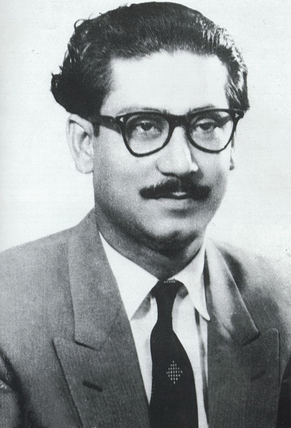

Sheikh Mujibur Rahman
1920-1975
Missile Man of Bangladesh
Sheikh Mujibur Rahman (Bengali: শেখ মুজিবুর রহমান; 17 March 1920 – 15 August 1975), often
shortened as Sheikh Mujib or Mujib and widely known as Bangabandhu was a Bangladeshi politician, statesman and
Founding Father of Bangladesh who served as the first President and later as the Prime Minister of Bangladesh
from April 1971 until his assassination in August 1975.[1] Mujib is credited with leading the successful
campaign for Bangladesh's independence from Pakistan. He is revered in Bangladesh with the honourific title of
"Bangabandhu" (Bôngobondhu "Friend of Bengal") which is used around the world. He was a founding member and
eventual leader of the Awami League, founded in 1949 as an East Pakistan–based political party in Pakistan.
Mujib is considered to have been a fundamental figure in the efforts to gain political autonomy for East
Pakistan and later as the central figure behind the Bangladesh Liberation Movement and the Bangladesh Liberation
War in 1971. Thus, he is regarded as the "Jatir Janak" or "Jatir Pita" (Jatir Jônok or Jatir Pita, both meaning
"Father of the Nation") of Bangladesh. His daughter Sheikh Hasina is the current leader of the Awami League and
currently serves as the Prime Minister of Bangladesh.
Six point movement
- The constitution should provide for a Federation of Pakistan in its true sense on the Lahore Resolution
and the parliamentary form of government with supremacy of a legislature directly elected on the basis of
the universal adult franchise.
- The federal government should deal with only two subjects: defense and foreign affairs, and all other
residuary subjects shall be vested in the federating states.
- A P J Abdul Kalam: The Visionary of India by K Bhushan, G Katyal;
A P H Pub Corp, 2002.
- Two separate, but freely convertible currencies for two wings should be introduced; or if this is not
feasible, there should be one currency for the whole country, but effective constitutional provisions should
be introduced to stop the flight of capital from East to West Pakistan. Furthermore, a separate banking
reserve should be established and separate fiscal and monetary policy be adopted for East Pakistan.
- The power of taxation and revenue collection shall be vested in the federating units and the federal
center will have no such power. The Federation will be entitled to a share in the state taxes to meet its
expenditures.
- There should be two separate accounts for the foreign exchange earnings of the two wings; the foreign
exchange requirements of the federal government should be met by the two wings equally or in a ratio to be
fixed; indigenous products should move free of duty between the two wings, and the constitution should
empower the units to establish trade links with foreign countries.
- A.P.J. Abdul Kalam: A Life by Arun Tiwari; Haper Collins, 2015.
- East Pakistan should have a separate militia or paramilitary forces.